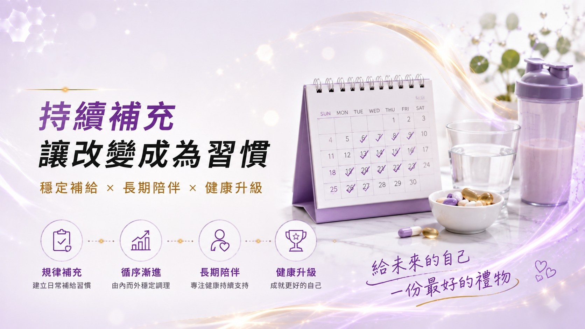

💡 GLP-1 改變了保健市場！從單純體重管理走向「GLP-1 友善營養」，探索少量、高營養密度與精準補給的全新商機。
🔍 GLP-1之後，保健市場正在出現什麼新需求？
從體重管理走向「GLP-1友善營養」，下一波保健新品機會正在形成 ✨
GLP-1相關體重管理受到全球市場高度關注，也正在改變消費者對飲食、營養補充與健康管理的思考方式。當飲食量、食慾與飲食習慣發生改變，新的問題也隨之出現：
🍽️ 吃得更少之後，如何讓每一口更有營養價值？
因此，下一波值得保健品牌關注的，不一定是再開發一款「體重管理產品」，而是圍繞使用者營養需求所形成的全新市場：
🎯 GLP-1 Friendly Nutrition｜GLP-1友善營養
📈｜GLP-1改變的，不只是體重管理市場
GLP-1相關產品的發展，正在讓市場從過去單純關注「少吃、體重管理」，逐漸延伸到：吃得少，是否也吃得夠？
當整體飲食量下降，蛋白質, 膳食纖維, 維生素, 礦物質與水分等營養攝取是否充足，就更值得被關注。因此，GLP-1帶來的新市場思維，不只是「控制熱量」，而是進一步走向：
少量 × 營養密度 × 精準補給
🥗｜吃得少，更要重視「營養密度」
當飲食份量減少，同樣一餐所能提供的營養也可能跟著減少。因此，「營養密度」會成為 GLP-1友善營養的重要概念。比起單純追求低熱量，更值得思考的是：有限的飲食量中，是否能取得足夠且多元的營養？
日常飲食仍應以多元、營養密度高的天然食物為基礎，例如蔬菜、水果、全穀類、豆類、優質蛋白質、堅果種子等。而對於飲食攝取不足或有特定營養需求者，則可依個人狀況與專業建議評估營養補充。
GLP-1 Friendly 第一個產品思維：
不是吃更多，而是每一口更有營養價值。
💪｜蛋白質，成為GLP-1營養管理的重要課題
當食慾與食量下降，蛋白質攝取量也可能跟著減少。蛋白質是人體重要的營養素，因此 GLP-1相關營養建議也特別重視蛋白質攝取，以及搭配適當的阻力／肌力訓練。
日常可以從魚、蛋、乳品、豆類、瘦肉等食物取得蛋白質。若因食量較小而較難從日常飲食攝取，也可能衍生出：小份量蛋白飲、蛋白粉包、高蛋白營養補充等產品需求。這也是 GLP-1 Friendly Nutrition 非常值得品牌關注的新品方向。
⭐ 產品開發關鍵：小份量，也能提供有感的營養補給。
💧｜膳食纖維與水分，也是日常營養的重要環節
GLP-1友善營養不應該只看蛋白質。當飲食量改變，蔬菜、水果、全穀類等食物攝取量也可能改變，因此膳食纖維與水分攝取同樣值得關注。日常飲食仍應優先從蔬果、豆類、全穀類等天然食物取得膳食纖維，並維持適當飲水。
從產品開發角度，則可以延伸思考：水溶性膳食纖維、纖維粉包、機能飲、沖泡飲等便利型補充形式。
產品設計的核心不是追求「越多越好」，而是兼顧：
補充便利性 × 食用體驗 × 日常持續性
🛡️｜吃得少，微量營養素更不能忽略
除了蛋白質與膳食纖維之外，GLP-1相關營養管理另一個值得關注的方向，就是「營養充足性」。當整體熱量與食物攝取量降低，部分族群可能更需要留意維生素與礦物質攝取。
實際需求因個人飲食、年齡、身體狀況與用藥情形而不同，不適合用單一配方套用所有族群。但對保健產品開發而言，卻出現了一個非常重要的新思維：從「單一熱門成分」走向「基礎營養支持」。
可進一步思考：綜合維生素礦物質｜維生素D｜鈣｜B群｜其他依 TA 需求規劃的基礎營養。
💡 真正的產品價值，在於先定義目標族群，再設計適合的營養組合。
📦｜GLP-1 Friendly產品，不只是「配方」問題
如果消費者本身食慾較低，產品做得太大、太多、太複雜，反而可能降低使用意願。因此 GLP-1友善產品開發值得重新思考「食用體驗」。
- ✅ 小份量、高營養密度
- ✅ 方便攜帶、容易補充
- ✅ 良好風味與口感
- ✅ 符合日常生活情境
並依不同需求發展：粉包、沖泡飲、蛋白飲、機能飲、膠囊、錠劑等不同產品形式。
GLP-1 Friendly真正的產品邏輯：
不是把成分塞得更多，而是讓營養更容易被補充。
🚀｜GLP-1帶來的，可能是一條新的保健產品賽道
從市場開發角度來看，GLP-1帶來的機會可能不只是體重管理，而是延伸出全新的「營養支持型」產品市場。未來值得關注的產品方向包括：蛋白營養、膳食纖維、基礎營養、小份量高營養密度、便利型營養補充，以及依年齡、性別與生活型態設計的分眾營養。
對品牌而言，真正值得思考的是：「我的產品，可以解決GLP-1時代出現的哪一個營養需求？」而不是單純在包裝上加入「GLP-1」三個字。
🤝 BKE 百達醫｜GLP-1友善營養產品開發
GLP-1 Friendly Nutrition 是新的市場概念，同時也需要更精準的產品定位與配方設計。百達醫協助品牌把市場趨勢，轉化成真正具有商品化可能的產品，流程包含：
- 市場趨勢 ➔ 目標客群 TA 評估
- 營養需求 ➔ 原料與配方設計
- 劑型與食用情境規劃
- 打樣測試 ➔ 品質管理與生產製造
市場在變，產品也該跟著變。
BKE 百達醫企業 | OEM / ODM 一站式保健食品代工
GLP-1友善營養｜配方研發｜產品設計｜多元劑型｜生產製造
